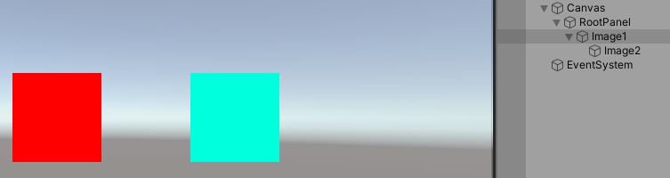

08EventSystem
EventSystem
EventSystem是Unity中UI事件处理的中心。承担将UI层面鼠标点击事件进行分发处理的过程。我这里主要是记录一下EventSystem的架构，以及事件分发流程。帮助理清Unity中事件的处理流程。
这里主要是以PC端的处理流程为例。
EventSystem概略
在PC端一个鼠标点击事件的处理大概可以用下图表示：
其中
- 蓝色的为大致的类型结构
- 黄色部分为事件的处理流程
简单概括就是。
- 在EventSystem中会每帧轮询各个处理module来处理对应的事件。相当于不断轮询各种屏幕点击事件有没有发生。
- 对应BaseInputModule的子类会处理各种事件。大致来说可以分为两步：
- 通过屏幕坐标，结合RaycastManager中存储的对象，找到对应的GameObject。
- 基于找到的GameObject检索，处理事件的脚本，处理对应事件。
下面详细记录这里面各个关键步骤的详细情况
Raycast查找对应GameObject流程
首先EventSystem中Update的处理相对简单清晰。先Tick所有Module进行更新，然后查找一个支持且激活的Module设置为当前进行输入处理的Module。即设置为CurrentInputModule，该Module会被调用对应的Process来进行后续的事件处理操作。
所以这个Update主要逻辑就是筛选适合的Module来进行消息处理。
对于PC端来说，使用StandaloneInputModule类型，其Process处理最后会进入到ProcessMouseEvent函数，也即是对鼠标事件的处理流程中去。该函数实现如下：
|
|
所以GetMousePointerEventData函数承担了，查找到点击GameObject的功能。最后会调用的EventSysten上的RaycastAll函数上。这里Unity的UGUI系统被没有使用复杂的计算几何中的一些结构和算法。而是直接遍历了RaycasterManager中存储的所有可被射线检测对象，这个流程可以用下图来较为清晰的来说明：
其中重要几个点在于
- 从RaycastManager中获取Raycaster列表，依次调用对应的Raycast函数。对应的Raycaster类型分装了对Raycast概念的包装实现。
RaycastAll函数实现如下：
|
|
这里GetRaycasters函数返回的是一个BaseRaycaster类型的列表，然后已依次调用Raycast函数。BaseRaycaster采用的是自己注入的方式，其继承于UIBehaviour，可以挂在GameObject上。当其激活Enable的时候，会将自己注册到RaycasterManager中进行管理。而RaycasterManager并没有对其进行排序处理。也就是说，对应Raycaster的激活处理Raycast的顺序，就是其在RaycasterManager中的保存顺序。
其中GraphicRaycaster是UI系统中用来处理射线检测事件的类型。当调用鼠标点击的时候，最后会由该类型的Raycast函数来处理。GraphicRaycaster要求所在GameObject必须有一个Canvas组件。而这个Canvas对象，正是GraphicRaycaster用来在GraphicRegister中查找要进行检测Graphic对象的键值。
- 从GraphicRegister中获取要检测的Graphic对象列表。逐个用PointerEventData来检测是否命中对应的Graphic对象。
GraphicRegister中以字典的方式存储了每个Canvas下所有Graphic对象列表。字典的键值为Canvas对象，值对象为一个IndexedSet容器，存放了Graphic列表。IndexedSet是UGUI自己实现的一个容器结构，其目标是实现一个带有索引的集合结构。实现上是用Dictionary加List来实现的，Dictionary确保集合对象不重复，同时用来提供给定一个对象，查找索引的功能。而List来有序存储Graphic对象。此外其里面为了高效性还做了很多优化。
Graphic对象也采用了自己注入的方式，在Graphic基类里面有个通用的RaycastTarget字段。该字段设置为True或Flase时会对应调用GraphicRegister的注册接口或移除接口，将自身注入到GraphicRegister中。每次调用注入的时候，会带上自己所在父GameObject中最近的Canvas对象，用来表示存储到对应的Canvas中去。也就说，同一个Canvas下所有子对象上的Graphic子类对象，会被放进同一个IndexedSet中去管理。
- 遍历IndexedSet列表逐个进行检测。
这个可以直接看GraphicRaycaster类型的Raycast实现。这里面有很多细节：
|
|
可以看到对于每一个Graphic对象这里有一些开关条件判定。例如最常见的RaycastTarget判定以及范围判定，这其中范围判定是直接调用的引擎判定接口。从接口来看，应该是根据RectTransform范围和点来判定点是否落在Rect所示范围之内。 最后会进入到Graphic具体对象中的Raycast实现判定。而Graphic对象的判定则相对复杂，是一个如下的递归判定。
简单来说，这个过程的目的就是递归向上查找当前点击是否符合每一个父对象上Graphic组件的IsRaycastLocationValid判定。只要有一个判定不合法，则视为该GameObject没有被点击命中。进而不会添加到结果队列中去。而IsRaycastLocationValid是一个接口函数，对应每个不同对象来说，都有着不同的实现。
最后，所有满足条件的对象会加入到一个列表中，然后按照深度从大到小的顺序排序后返回给外侧。而所有Raycaster的结果列表会EventSystem那一层汇聚，即RaycastAll函数位置处会讲多由列表合为一个。都放在最后的raycastResults列表中。
在该层会将所有的Raycaster的结果，即raycastResults列表进行一次排序操作。此时会按照如下的一个优先级顺序来进行排序操作
最后会返回这个排序列表的第一个来作为Raycast命中的GameObject。
在鼠标点击情况下，会针对鼠标的左中右键依次生成对应的鼠标事件的数据结构封装。并将Raycast命中信息包装进去，作为本次鼠标的整个点击事件信息返还给外面。
对应GameObject上处理各种事件流程
事件处理的后半部分便是基于前面筛选出的GameObject对象来进行对应的事件处理。即ProcessMouseEvent函数中，获取到MouseData之后的处理部分。
Unity对各种点击事件概念是进行了一定的包装和处理的。从设计层角度来说，Unity是提供了一套接口函数。对应被点击的物体上如果有脚本实现了对应的接口，那么会触发对应的实现函数，进而实现开发现者想处理的点击事件逻辑。
ProcessMouseEvent函数后半部分便是对这个分发过程的实现。
而整个分发过程可用如下图结构表示：
这里有一个很重要的承载类就是ExecuteEvents类。图中右侧各种查找对应Interface是否实现的方式依靠于这个静态类型，其中提供了一系列静态函数，用来查找给定的事件，在对应GameObject以及其父对象上是否存在。所以ExecuteEvents相当于对查找过程的函数封装。ExecuteEvents类提供的主要部分功能接口如下：
可以看到主要就是提供了一系列事件接口的查找函数。主要是Execute等。而其查找的方式也很简单。具体来说就是：
- 查找当前GameObject上的组件是否有实现对应事件接口
- 如果没有对应实现，则向父GameObject上继续查找
总结
其实可以看到UGUI中的事件系统并没有使用特别复杂的数据结构，算法等过程。就是很本质的几步流程：
- 所有Graphic对象激活的时候注册到对应Canvas所对应的队列中。
- 遍历队列查找当前点击命中的Graphic对象，其中涉及Canvas，Depth等值的大小排序。
- 以命中的GameObject对象为基点，开始查找实现接口。
这样一套结构其实有一些细节问题，其一便是效率问题，实际上，查找过程就相当于不断遍历，不断的获取Component。同时也没有任何几何数据结构的支持。实际上计算几何中对于2D点查询已经有很多研究，不过一般复杂的数据结构和算法，也难以维护。不过这里简单的方式，性能上可能已经足够，同时有便于理解和扩展。
其次是有些时候会有一些奇怪的点击效果出现。
- 最常见的是Button有了，但是没有点击效果，一般都会加一个空image。实际上这个image就是为了是的第一步Raycast对象能命中对象。image本身继承自Graphic，所以会加入到Canvas队列中，进而可以被Raycast检测到。
- 对于Graphic检测还有一个ICanvasRaycastFilter接口类型可供检测控制，对于进行检测的GameObject上如果有实现该接口类型的实例对象，那么可以控制检测判定。
- 根据上面的流程结构，可以发现对于如下图的UI结构，会发现虽然点击在Image2(蓝色)上面，但是也会触发到Image1上的Button，这是因为Graphic检测对象命中了Image2。但是事件查找的时候递归向上查找事件处理，找到Image1上的Button进行了处理。
 这种方式算是符合设计目标的。对于一个Button下可能有很复杂的图形结构，最后都到根节点上进行事件处理。但是也会出现如图这样比较奇怪的事件处理情况。